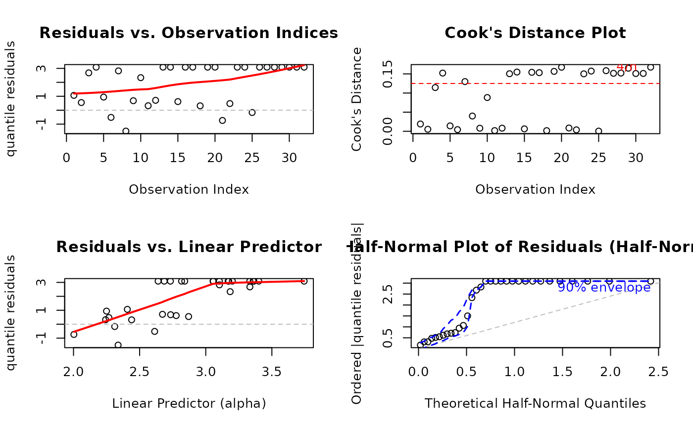

Operational data on the proportion of crude oil converted to gasoline after distillation and fractionation processes.
Format
A data frame with 32 observations on 6 variables:
- yield
numeric. Proportion of crude oil converted to gasoline after distillation and fractionation (response variable).
- gravity
numeric. Crude oil gravity in degrees API (American Petroleum Institute scale).
- pressure
numeric. Vapor pressure of crude oil in pounds per square inch (psi).
- temp10
numeric. Temperature in degrees Fahrenheit at which 10\ crude oil has vaporized.
- temp
numeric. Temperature in degrees Fahrenheit at which all gasoline has vaporized (end point).
- batch
factor. Batch indicator distinguishing the 10 different crude oils used in the experiment.
Details
This dataset was collected by Prater (1956) to study gasoline yield from crude oil. The dependent variable is the proportion of crude oil after distillation and fractionation. Atkinson (1985) analyzed this dataset using linear regression and noted that there is "indication that the error distribution is not quite symmetrical, giving rise to some unduly large and small residuals".
The dataset contains 32 observations. It has been noted (Daniel and Wood, 1971,
Chapter 8) that there are only ten sets of values of the first three
explanatory variables which correspond to ten different crudes subjected to
experimentally controlled distillation conditions. These conditions are captured
in variable batch and the data were ordered according to the ascending order
of temp10.
References
Atkinson, A.C. (1985). Plots, Transformations and Regression: An Introduction to Graphical Methods of Diagnostic Regression Analysis. New York: Oxford University Press.
Cribari-Neto, F., and Zeileis, A. (2010). Beta Regression in R. Journal of Statistical Software, 34(2), 1–24. doi:10.18637/jss.v034.i02
Daniel, C., and Wood, F.S. (1971). Fitting Equations to Data. New York: John Wiley and Sons.
Ferrari, S.L.P., and Cribari-Neto, F. (2004). Beta Regression for Modeling Rates and Proportions. Journal of Applied Statistics, 31(7), 799–815.
Prater, N.H. (1956). Estimate Gasoline Yields from Crudes. Petroleum Refiner, 35(5), 236–238.
Examples
# \donttest{
require(gkwreg)
require(gkwdist)
data(GasolineYield)
# Example 1: Kumaraswamy regression with batch effects
# Model mean yield as function of batch and temperature
# Allow precision to vary with temperature (heteroscedasticity)
fit_kw <- gkwreg(yield ~ batch + temp | temp,
data = GasolineYield,
family = "kw"
)
summary(fit_kw)
#>
#> Generalized Kumaraswamy Regression Model Summary
#>
#> Family: kw
#>
#> Call:
#> gkwreg(formula = yield ~ batch + temp | temp, data = GasolineYield,
#> family = "kw")
#>
#> Residuals:
#> Min Q1.25% Median Mean Q3.75% Max
#> -0.0642 -0.0099 0.0018 -0.0029 0.0070 0.0528
#>
#> Coefficients:
#> Estimate Std. Error z value Pr(>|z|)
#> alpha:(Intercept) 2.241e-01 3.123e-02 7.178e+00 7.07e-13 ***
#> alpha:batch1 8.261e-01 2.965e-02 2.786e+01 < 2e-16 ***
#> alpha:batch2 5.826e-01 3.182e-02 1.831e+01 < 2e-16 ***
#> alpha:batch3 7.100e-01 2.948e-02 2.409e+01 < 2e-16 ***
#> alpha:batch4 4.631e-01 2.669e-02 1.735e+01 < 2e-16 ***
#> alpha:batch5 5.204e-01 2.669e-02 1.950e+01 < 2e-16 ***
#> alpha:batch6 4.482e-01 2.788e-02 1.608e+01 < 2e-16 ***
#> alpha:batch7 2.234e-01 2.561e-02 8.725e+00 < 2e-16 ***
#> alpha:batch8 2.011e-01 2.747e-02 7.322e+00 2.45e-13 ***
#> alpha:batch9 1.388e-01 3.000e-02 4.627e+00 3.72e-06 ***
#> alpha:temp 6.619e-03 1.280e-08 5.172e+05 < 2e-16 ***
#> beta:(Intercept) 1.621e+01 1.429e+00 1.134e+01 < 2e-16 ***
#> beta:temp 3.811e-02 2.875e-03 1.326e+01 < 2e-16 ***
#> ---
#> Signif. codes: 0 ‘***’ 0.001 ‘**’ 0.01 ‘*’ 0.05 ‘.’ 0.1 ‘ ’ 1
#>
#> Confidence intervals (95%):
#> 3% 98%
#> alpha:(Intercept) 0.1629 0.2853
#> alpha:batch1 0.7680 0.8843
#> alpha:batch2 0.5202 0.6449
#> alpha:batch3 0.6522 0.7678
#> alpha:batch4 0.4107 0.5154
#> alpha:batch5 0.4681 0.5727
#> alpha:batch6 0.3935 0.5028
#> alpha:batch7 0.1732 0.2736
#> alpha:batch8 0.1473 0.2550
#> alpha:batch9 0.0800 0.1976
#> alpha:temp 0.0066 0.0066
#> beta:(Intercept) 13.4054 19.0064
#> beta:temp 0.0325 0.0437
#>
#> Link functions:
#> alpha: log
#> beta: log
#>
#> Fitted parameter means:
#> alpha: 18.86
#> beta: 1.864e+13
#> gamma: 1
#> delta: 0
#> lambda: 1
#>
#> Model fit statistics:
#> Number of observations: 32
#> Number of parameters: 13
#> Residual degrees of freedom: 19
#> Log-likelihood: 96.73
#> AIC: -167.5
#> BIC: -148.4
#> RMSE: 0.0206
#> Efron's R2: 0.9619
#> Mean Absolute Error: 0.01403
#>
#> Convergence status: Failed
#> Iterations: 85
#>
# Interpretation:
# - Alpha (mean): Different batches have different baseline yields
# Temperature affects yield transformation
# - Beta (precision): Higher temperatures may produce more variable yields
# Example 2: Full model with all physical-chemical properties
fit_kw_full <- gkwreg(
yield ~ gravity + pressure + temp10 + temp |
temp10 + temp,
data = GasolineYield,
family = "kw"
)
#> Warning: NaNs produced
summary(fit_kw_full)
#>
#> Generalized Kumaraswamy Regression Model Summary
#>
#> Family: kw
#>
#> Call:
#> gkwreg(formula = yield ~ gravity + pressure + temp10 + temp |
#> temp10 + temp, data = GasolineYield, family = "kw")
#>
#> Residuals:
#> Min Q1.25% Median Mean Q3.75% Max
#> -0.0516 -0.0169 -0.0034 -0.0053 0.0033 0.0444
#>
#> Coefficients:
#> Estimate Std. Error z value Pr(>|z|)
#> alpha:(Intercept) 0.457549 0.166035 2.756 0.00586 **
#> alpha:gravity 0.001539 0.003912 0.393 0.69399
#> alpha:pressure 0.024644 0.012936 1.905 0.05676 .
#> alpha:temp10 -0.001364 NaN NaN NaN
#> alpha:temp 0.005833 NaN NaN NaN
#> beta:(Intercept) -1.766712 3.731448 -0.473 0.63588
#> beta:temp10 0.059930 0.013139 4.561 5.08e-06 ***
#> beta:temp 0.008332 0.001735 4.802 1.57e-06 ***
#> ---
#> Signif. codes: 0 ‘***’ 0.001 ‘**’ 0.01 ‘*’ 0.05 ‘.’ 0.1 ‘ ’ 1
#>
#> Confidence intervals (95%):
#> 3% 98%
#> alpha:(Intercept) 0.1321 0.7830
#> alpha:gravity -0.0061 0.0092
#> alpha:pressure -0.0007 0.0500
#> alpha:temp10 NaN NaN
#> alpha:temp NaN NaN
#> beta:(Intercept) -9.0802 5.5468
#> beta:temp10 0.0342 0.0857
#> beta:temp 0.0049 0.0117
#>
#> Link functions:
#> alpha: log
#> beta: log
#>
#> Fitted parameter means:
#> alpha: 9.935
#> beta: 59339339
#> gamma: 1
#> delta: 0
#> lambda: 1
#>
#> Model fit statistics:
#> Number of observations: 32
#> Number of parameters: 8
#> Residual degrees of freedom: 24
#> Log-likelihood: 80.45
#> AIC: -144.9
#> BIC: -133.2
#> RMSE: 0.02081
#> Efron's R2: 0.9611
#> Mean Absolute Error: 0.01542
#>
#> Convergence status: Successful
#> Iterations: 70
#>
# Interpretation:
# - Mean model captures effects of crude oil properties
# - Precision varies with vaporization temperatures
# Example 3: Exponentiated Kumaraswamy for extreme yields
# Some batches may produce unusually high/low yields
fit_ekw <- gkwreg(
yield ~ batch + temp | # alpha: batch effects
temp | # beta: temperature precision
batch, # lambda: batch-specific tail behavior
data = GasolineYield,
family = "ekw"
)
summary(fit_ekw)
#>
#> Generalized Kumaraswamy Regression Model Summary
#>
#> Family: ekw
#>
#> Call:
#> gkwreg(formula = yield ~ batch + temp | temp | batch, data = GasolineYield,
#> family = "ekw")
#>
#> Residuals:
#> Min Q1.25% Median Mean Q3.75% Max
#> -0.0353 -0.0133 -0.0020 0.0049 0.0082 0.2229
#>
#> Coefficients:
#> Estimate Std. Error z value Pr(>|z|)
#> alpha:(Intercept) -0.367172 NaN NaN NaN
#> alpha:batch1 0.527312 NaN NaN NaN
#> alpha:batch2 0.484926 NaN NaN NaN
#> alpha:batch3 0.678431 NaN NaN NaN
#> alpha:batch4 0.319332 NaN NaN NaN
#> alpha:batch5 0.503547 NaN NaN NaN
#> alpha:batch6 0.303719 NaN NaN NaN
#> alpha:batch7 0.162551 NaN NaN NaN
#> alpha:batch8 0.192103 NaN NaN NaN
#> alpha:batch9 0.097541 NaN NaN NaN
#> alpha:temp 0.006092 NaN NaN NaN
#> beta:(Intercept) 9.778013 NaN NaN NaN
#> beta:temp 0.011640 NaN NaN NaN
#> lambda:(Intercept) -0.178560 NaN NaN NaN
#> lambda:batch1 35.456725 NaN NaN NaN
#> lambda:batch2 3.490460 NaN NaN NaN
#> lambda:batch3 1.122573 NaN NaN NaN
#> lambda:batch4 7.227665 NaN NaN NaN
#> lambda:batch5 0.685733 NaN NaN NaN
#> lambda:batch6 7.410365 NaN NaN NaN
#> lambda:batch7 2.274554 NaN NaN NaN
#> lambda:batch8 0.762437 NaN NaN NaN
#> lambda:batch9 1.441623 NaN NaN NaN
#>
#> Confidence intervals (95%):
#> 3% 98%
#> alpha:(Intercept) NaN NaN
#> alpha:batch1 NaN NaN
#> alpha:batch2 NaN NaN
#> alpha:batch3 NaN NaN
#> alpha:batch4 NaN NaN
#> alpha:batch5 NaN NaN
#> alpha:batch6 NaN NaN
#> alpha:batch7 NaN NaN
#> alpha:batch8 NaN NaN
#> alpha:batch9 NaN NaN
#> alpha:temp NaN NaN
#> beta:(Intercept) NaN NaN
#> beta:temp NaN NaN
#> lambda:(Intercept) NaN NaN
#> lambda:batch1 NaN NaN
#> lambda:batch2 NaN NaN
#> lambda:batch3 NaN NaN
#> lambda:batch4 NaN NaN
#> lambda:batch5 NaN NaN
#> lambda:batch6 NaN NaN
#> lambda:batch7 NaN NaN
#> lambda:batch8 NaN NaN
#> lambda:batch9 NaN NaN
#>
#> Link functions:
#> alpha: log
#> beta: log
#> lambda: log
#>
#> Fitted parameter means:
#> alpha: 7.856
#> beta: 1117127
#> gamma: 1
#> delta: 0
#> lambda: 2.618e+14
#>
#> Model fit statistics:
#> Number of observations: 32
#> Number of parameters: 23
#> Residual degrees of freedom: 9
#> Log-likelihood: 114
#> AIC: -182
#> BIC: -148.3
#> RMSE: 0.04234
#> Efron's R2: 0.8391
#> Mean Absolute Error: 0.01906
#>
#> Convergence status: Failed
#> Iterations: 96
#>
# Interpretation:
# - Lambda varies by batch: Some crude oils have more extreme
# yield distributions (heavy tails for very high/low yields)
# Model comparison: Does tail flexibility improve fit?
anova(fit_kw, fit_ekw)
#> Analysis of Deviance Table
#>
#> Model 1: yield ~ batch + temp | temp
#> Model 2: yield ~ batch + temp | temp | batch
#>
#> Resid. Df Resid. Dev Df Deviance Pr(>Chi)
#> fit_kw 19.00000 -193.45292
#> fit_ekw 9.00000 -227.96270 10 34.50978 0.00015134 ***
#> ---
#> Signif. codes: 0 '***' 0.001 '**' 0.01 '*' 0.05 '.' 0.1 ' ' 1
# Diagnostic plots
par(mfrow = c(2, 2))
plot(fit_kw, which = c(1, 2, 4, 5))
#> Simulating envelope ( 100 iterations): .......... Done!

par(mfrow = c(1, 1))
# }